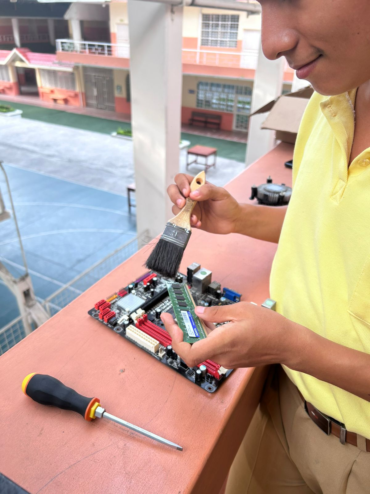

El Área Técnica de Informática de la Unidad Educativa Sagrado Corazón forma estudiantes capaces de desarrollar soluciones tecnológicas, administrar equipos informáticos y aplicar conocimientos de programación para afrontar los retos del mundo actual.

Formar profesionales técnicos con conocimientos sólidos, valores humanos y compromiso con la innovación.
Ser un referente educativo en la formación tecnológica de calidad y excelencia.
Promovemos la creatividad, el aprendizaje continuo y el desarrollo de nuevas soluciones digitales.
Desarrollo de aplicaciones web y de escritorio.
Modelado y gestión eficiente de la información.
Mantenimiento preventivo y correctivo de equipos.
Configuración y administración de redes informáticas.